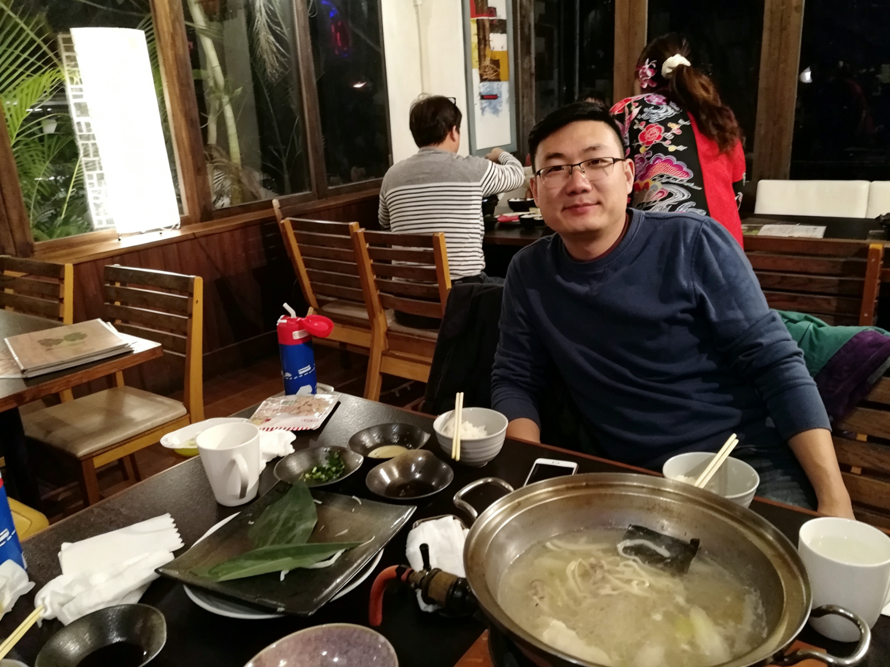
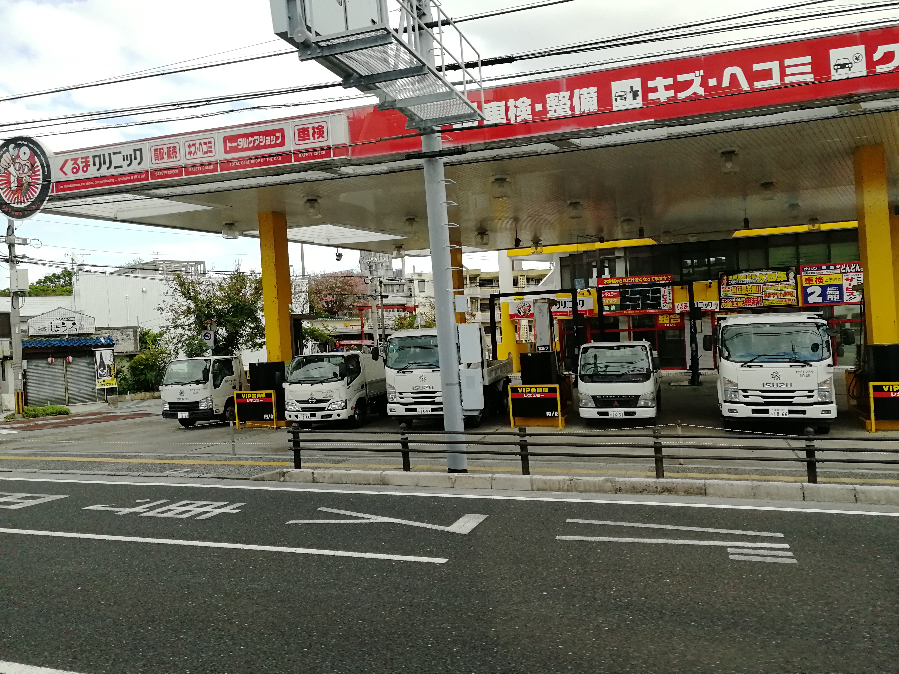
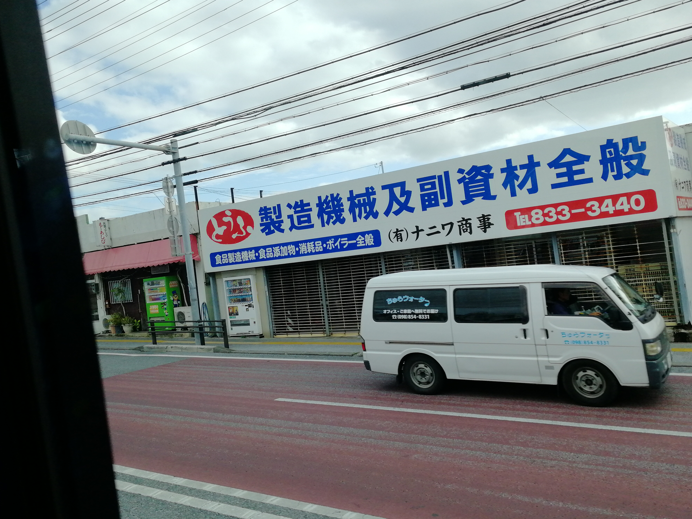
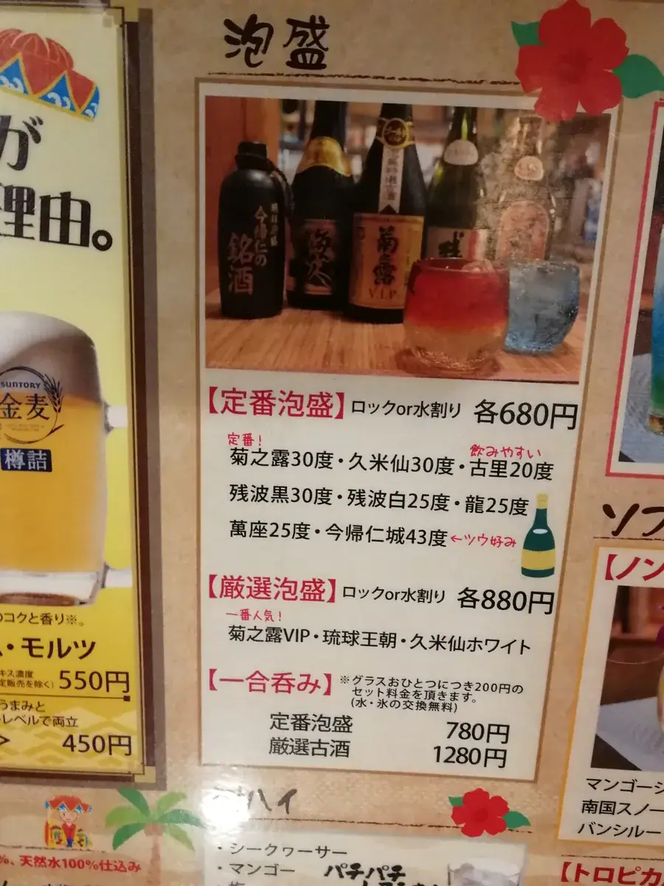
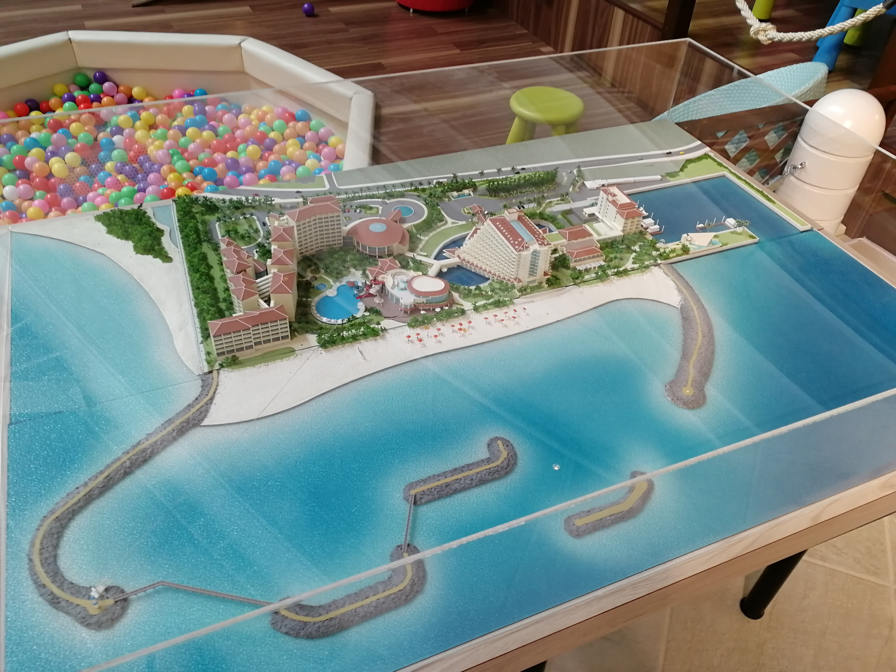

冲绳：一个把"海洋"做成产业、把"现金"活成信任的地方
Okinawa — where the ocean became an industry and cash became trust.

2017 年去冲绳，这趟行程的关键词特别杂——海洋馆、酒店光影秀、火锅、和牛、永旺超市、只收现金的小店。乍看是一份典型的旅游清单，但拼起来看，其实每一件事背后都藏着一点"日本式经营逻辑"，值得慢慢拆。
美丽海水族馆：把"看鱼"做成了国家级文化工程
冲绳美丽海水族馆的前身，是 1975 年冲绳国际海洋博览会的场馆，博览会结束后被保留下来，2002 年重新扩建开放。它最出名的"黑潮之海"水槽，容积 7500 吨，是世界上第二大的水族箱之一，能同时展示多条最长可达 8 米多的鲸鲨，还是全世界第一个成功人工繁殖蝠鲼的水族馆。
这个水族馆真正厉害的地方，不是"大"，而是它把冲绳这个岛屿的地理宿命——四面环海、没什么陆地资源——反过来做成了一张最硬的文化名片。日本人没有把海洋馆做成一个单纯的旅游景点，而是做成了一整套关于"冲绳人与海洋关系"的叙事系统：从珊瑚礁到黑潮洋流，从深海探索到濒危物种保育，游客走一圈下来，接收到的不是"这里鱼很多"，而是"这个岛屿的身份认同，就是海洋"。这种把地理劣势转成文化资产的能力，跟我们在马尔代夫那篇看到的逻辑，是同一种思路的两种打法。


酒店的光影秀：把住客变成"这座城市的一部分"
我们住的那家酒店会在晚上向当地居民开放，馆内还会有光影表演。这个细节看似很小，但背后的逻辑很清楚：酒店不只是给游客住的盒子，它也可以是当地社区生活的一部分。日本很多度假型酒店会有意识地做这种"内外融合"的设计——游客觉得自己在体验当地生活，当地人也觉得这家酒店是"自己的地方"，而不是一个跟本地生活隔绝的封闭商业体。这跟马尔代夫"一岛一酒店"那种彻底隔绝的逻辑正好是两个极端，也说明同样是做旅游 / 酒店生意，不同的地理和文化条件下，可以长出完全不同的经营哲学。


呷哺呷哺：一次意外的"点菜成功"
去吃火锅的时候，完全没有英文菜单，全是日语，但我们听懂了"呷哺呷哺"这个词，成功点上了菜——这其实是个挺有意思的巧合："しゃぶしゃぶ"（读音接近"呷哺呷哺"）本来就是日语里"涮涮锅"的拟声词，中国的连锁品牌"呷哺呷哺"这个名字，本身就是直接借用了日语这个词的发音和意象。所以我们那次能连蒙带猜点成菜，某种意义上是因为一个中国品牌早就替我们"翻译"过这个词了。
石垣牛：一个被低估的和牛"母品牌"
冲绳的石垣牛，产自石垣市及八重山群岛，是黑毛和种和牛的一支。它常年活在神户牛、松阪牛这些"顶流"和牛的阴影下，但很少有人知道——很多石垣岛出生的小牛，后来被送到神户、松阪等地继续养大，最后就成了神户牛、松阪牛。换句话说，石垣牛某种意义上是这些顶级和牛品牌的"血统源头"之一，只是因为没有留在本地养成、贴上本地品牌，知名度就差了一大截。石垣牛本身脂肪含量适中，口感清爽不腻，2000 年冲绳八国峰会上还被选作晚宴主菜。这个案例对做品牌的人来说很有启发：同样的品质、同样的血统，最后卖出去的品牌溢价，很大程度上取决于谁掌握了"最后一公里"的养成和定价权。
永旺（AEON）：同一个零售品牌，两种打法
去了冲绳当地的永旺，跟中国的永旺体验很不一样。日本本土的 AEON 更像是社区生活的中枢——除了卖场，还整合了美食街、本地小店、诊所、银行网点，甚至社区活动空间，是一种"社区综合体"的定位，货架陈列和自有品牌（PB）产品的比重也做得极细，几乎每个细分品类都有自己的 Topvalu 自有品牌产品线，靠稳定的品质和更低的价格建立信任。而永旺在中国市场，更多还是承担"大卖场"的功能，社区属性和自有品牌渗透率相对没有那么深。这对中国零售企业其实是个可以借鉴的方向：零售的护城河，不只是选址和价格，还包括能不能把"自有品牌 + 社区服务"这套组合拳做深，让消费者觉得这家店是生活的一部分，而不只是一个购物的地方。
只收现金的小店：一种"低效率"背后的高信任
冲绳有些小店，直到今天依然只收纸币，不接受信用卡，更别说移动支付。这不是技术落后，是一整套社会条件共同作用的结果：日本流通中现金总量占 GDP 比重在主要经济体里数一数二；日本 ATM 密度极高，平均每七百人就有一台；假币问题几乎不存在；商家如果开通信用卡支付，通常要支付 3% 到 6% 左右的手续费，对小本经营的店铺来说是笔不小的成本；再加上日本社会治安好，带现金出门的心理负担很低。这几个因素叠加，让"消费者愿意用现金、商家也乐意收现金"变成了一种社会性的均衡状态，谁都没有动力去打破它。
对来自移动支付高度发达的中国的人来说，这种场景一开始会觉得不方便，但换个角度看，这恰恰是一个社会对"现金"这个最古老支付工具依然保有高度信任的表现——效率不是唯一的评判标准，信任成本、社会治安、老龄人口的使用习惯，这些因素同样决定了一个市场愿不愿意为"更快"的支付方式买单。这对中国企业在海外推广移动支付、电子钱包一类产品时，是一个很现实的提醒：技术上更先进，不代表当地市场就有采纳的动力，商业模式要不要落地，最终还是取决于它能不能真正嵌进当地已经存在的信任结构里。
技术上更先进，不代表市场就有理由拥抱它——商业模式能不能落地，最终看它能不能嵌进当地已经存在的信任结构里。
——董立鑫 海鑫汇创始人兼执行总裁，新加坡世贸秘书长兼首席运营官
这一站留下的判断
冲绳这一趟看似松散——海洋馆、酒店、火锅、和牛、超市、现金小店，但串起来其实都在回答同一个问题：一个资源有限的地方，怎么把手里仅有的东西（海洋、社区关系、血统、信任习惯）打磨成没法被轻易复制的护城河。这跟我们在德国看到的"体系化竞争力"、在马尔代夫看到的"稀缺美学"，其实是同一个母题在不同市场里的具体变形。
本文整理自董立鑫（Bruce Dong）海外产业考察记录，首发于海鑫汇。